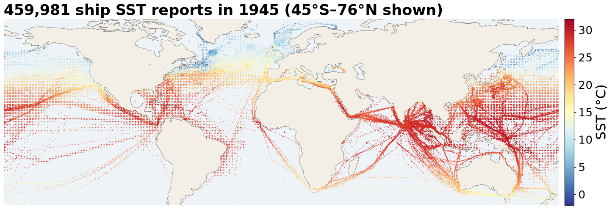
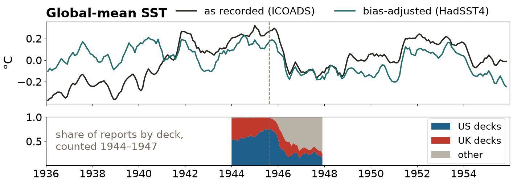
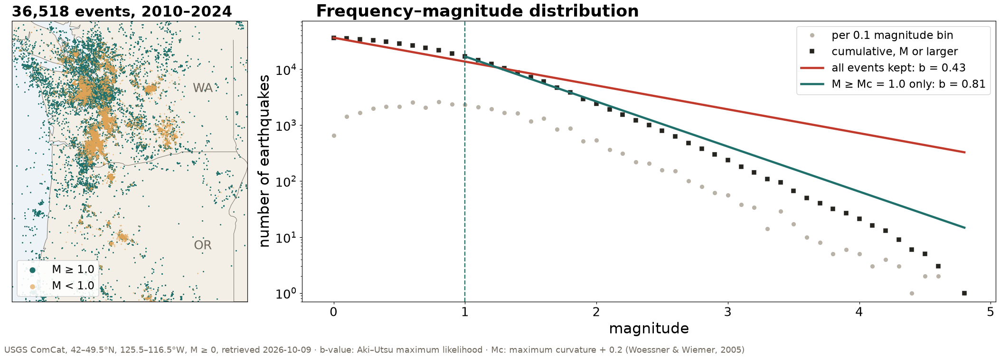

Cleaning tabular data
Session 5 · Fri Oct 9 · Book sections 2.3–2.4
🧮
Today’s question
Cleaning changes the data before a model sees it.
Which unusual values in a table are recording errors, and which are real measurements?
Reading: 2.3 Pandas · 2.4 DataFrame preparation
Literature example: ocean temperatures in the 1940s
📍 In-situ sensor 🌊 Ocean 🌡️ Atmospheric & climate science
Global-mean sea surface temperature drops by about 0.3 °C in late 1945, when the reports switch from US ships measuring engine-intake water to UK ships measuring water hauled up in buckets.
Thompson, Kennedy, Wallace & Jones (2008). Nature, 453, 646–649.
One data sample is one ship report (ICOADS release 3.1)
| date | lat | lon | SST °C | method | country | deck |
|---|---|---|---|---|---|---|
| 1945-07-01 | 52.5 | −178.5 | 15.6 | 195 US Navy logs | ||
| 1945-07-01 | 38.5 | −64.5 | 24.4 | 195 US Navy logs | ||
| 1945-12 | 14.5 | 120.8 | 27.8 | UK | 245 Royal Navy logs | |
| 1945-12 | −33.8 | 151.2 | 21.1 | UK | 245 Royal Navy logs |
The method column is blank for 96% of the 459,981 reports from 1945, so the method has to be inferred from the deck and the country.


Raw ICOADS today: −0.4 °C from late 1945 to mid-1946, as the US share of reports falls from 76% to 33%.
The same problem in other geoscience tables
0.12 °C
Buoys read cooler than ships. Correcting the offset removed the apparent slowdown of warming after 1998.
Karl, T. R., et al. (2015). Possible artifacts of data biases in the recent global surface warming hiatus. Science, 348, 1469–1472.
1941–1945
Estimating offsets separately for each ship deck and country removes the anomalous warmth of the World War II years.
Chan, D., & Huybers, P. (2021). Correcting observational biases in sea surface temperature observations removes anomalous warmth during World War II. Journal of Climate, 34, 4585–4602.
Mc
Below the magnitude of completeness a catalog misses events, and the b-value depends on where the cut is placed.
Woessner, J., & Wiemer, S. (2005). Assessing the quality of earthquake catalogues: Estimating the magnitude of completeness and its uncertainty. Bulletin of the Seismological Society of America, 95, 684–698.
< DL
Substituting the detection limit, or half of it, for nondetects in water-quality data biases means and trends.
Helsel, D. R. (2006). Fabricating data: How substituting values for nondetects can ruin results, and what can be done about it. Chemosphere, 65, 2434–2439.
Ocean temperatures, earthquake catalogs, and water chemistry share the problem: the result depends on how measurement metadata and missing or censored values are handled.
Tabular data in the geosciences
| Dataset | Provider | One data sample | A cleaning choice that changes results |
|---|---|---|---|
| 🗂️ Catalog 🪨 Solid Earth earthquake catalog | USGS ComCat, ISC | one earthquake | magnitude cut at the completeness limit; mixed magnitude types |
| 🗂️ Catalog 🪨 Solid Earth GNSS velocity table | NGL MIDAS | one station | reference frame; stations with short records |
| 🧪 Sample & laboratory 🪨 Solid Earth whole-rock geochemistry | GEOROC, EarthChem | one rock sample | values below detection; iron reported as FeO, Fe2O3, or total |
| 📍 In-situ sensor 💧 Land water stream-gauge daily values | USGS NWIS | one day at one gauge | values flagged as estimated or ice-affected |
| 🧪 Sample & laboratory 💧 Land water water-quality analyses | Water Quality Portal | one laboratory analysis | concentrations reported as below the detection limit |
| 📍 In-situ sensor 🌊 Ocean ship and buoy temperatures | ICOADS | one observation | measurement method: bucket, engine intake, or buoy |
In each table, one data sample is one physical object or observation, and the columns that describe how it was measured decide how it should be cleaned.
Twelve years of large earthquakes
🗂️ Catalog & compiled product 🪨 Solid Earth 📈 Seismology

Deep events outline the subducting slabs. A maximum depth of 685,500 means depth is stored in meters, so the first step converts it to km.
Catalog completeness and the b-value
🗂️ Catalog & compiled product 🪨 Solid Earth 📈 Seismology

Keeping all 36,518 events gives b = 0.43; keeping the 16,892 events at or above M 1.0 gives b = 0.81. Hazard models use b to extrapolate from small to large earthquakes.
A synthetic rock survey with known errors
🧪 Sample & laboratory 🪨 Solid Earth ⛰️ Geology & geomorphology
10,000 rock samples
5.6 : 1 granites to andesites
Each data sample: 7 major-element oxides (wt%), bulk density, magnetic susceptibility, and a lithology label.
Class imbalance is common in geoscience labels: a classifier that always predicts granite already scores 55%.
Zeros in three columns
| Column | Zeros in the table | Verdict |
|---|---|---|
| MgO | 1,434 | real: evolved granites have fractionated their magnesium away |
| K2O | 824 | real: same logic, other rock types |
| density | 15 | impossible: no rock has zero density, so this is an instrument’s failure code |
Replacing every zero with a missing value, then dropping incomplete samples, would remove 1,432 silica-rich granites from the table.
Values censored at a reporting floor

Synthetic (mlgeo_synth): a displacement series moving at 12 mm/yr, reported through a 5 mm floor.
12% of samples sit exactly at the 5 mm floor, and a missing-value check finds none: censored values are numbers, so missingness tests cannot detect them.
Effect of the floor on the fitted trend
| Series used for the fit | Trend (mm/yr) | Year-1 mean (mm) |
|---|---|---|
| True, uncensored | 12.44 | 4.80 |
| Reported, floor values kept | 11.59 | 7.24 |
| Reported, floor values dropped | 11.82 | 9.29 |
Both shortcuts raise the early values and lower the trend. Dropping the floor values worsens the year-1 mean and slightly improves the trend; neither recovers the true values.
Use a method that treats “below 5 mm” as information, or report the limit in the data card so later users can.
Gaps caused by the measured quantity
- A stream gauge fails during the flood it was installed to measure
- A GNSS antenna stops recording under a storm’s snow load
- A field crew skips a location when the road washes out
Missing completely at random (MCAR): safe to drop. Missing because of the value (MNAR): dropping deletes your extremes.
For each gap pattern, state what caused it. If the cause depends on the measured quantity, dropping those samples removes the extremes, and the data card should say so.
Cleaning can change a column’s type
- Replacing the impossible density zeros with a missing marker is the right fix
- pandas then changes the column’s storage type from float64 to object (numbers stored as generic objects), without a message
- Later steps that use only numeric columns, such as correlations and summaries, drop density without a warning
Check column types after each cleaning step: a column of numbers can be stored as a non-numeric type.
Four kinds of bad values and how to detect them
| Pathology | Fingerprint | Geoscience example | Response |
|---|---|---|---|
| Sentinel value | heap at an impossible value | density = 0 g/cm³ | replace only the impossible ones |
| Censored value | heap at a plausible round value | laboratory detection limit | model it, or report the limit |
| Informative gap | gaps track events | gauge drowned in the flood | treat the gap as data |
| Dtype drift | numeric content, non-numeric dtype | density after cleaning | check dtypes every step |
In each case, find out what produced the values before changing them, and record the change.
What each cleaning choice changed
| Choice | Data | Result |
|---|---|---|
| keep events below the completeness limit | Pacific Northwest earthquakes, ComCat | b-value 0.43 instead of 0.81 |
| combine ship measurement methods without correction | sea surface temperature, ICOADS | drop of about 0.3 °C in late 1945 (Thompson et al., 2008) |
| ignore the ship–buoy offset | sea surface temperature, ERSST | apparent slowdown of warming after 1998 |
| replace all zeros, then drop incomplete samples | rock survey (synthetic) | 1,432 granites removed |
| keep values at the reporting floor | GNSS-shaped series (synthetic) | trend 11.59 instead of 12.44 mm/yr |
| substitute the detection limit for nondetects | water-quality analyses | biased means and trends |
Each choice changed a number that a scientific conclusion depends on. Record the rule, how many values it changed, and why, so that another analyst can repeat the analysis with a different choice.
Cleaning rules your agent must follow
Ask an assistant to “clean this table” and the likely result is the global sweep: zeros to missing, then drop incomplete samples.
| A rule that cannot be checked | A rule that can |
|---|---|
| Clean the data carefully | Replace a value only if it lies outside the physical range stated in data/README.md |
| Handle missing values | Log every replacement or drop (column, rule, count) to cleaning_log.csv |
| Fix the types | Report df.dtypes before and after each cleaning step |
If AGENTS.md states no cleaning rule, an assistant applies its default: the global sweep from the zeros slide.
Run notebook 2.4
pixi run jupyter lab→2.4_dataframes_prep.ipynb- Run the cleaning: count the zeros, replace only the impossible ones, catch the dtype change and fix it
- Reproduce the censoring bias (11.59 vs 12.44 mm/yr), then drop the floor values: predict first which statistic gets worse, the trend or the year-1 mean
- Exercise Q3: what accuracy does “always predict granite” achieve, and what does that imply for evaluating any classifier on this table?
- Write one checkable cleaning rule into your AGENTS.md
Monday: sampling, resampling, and irregular data (2.5–2.6) · HW1 due Mon Oct 12
ESS 469/569 · Machine Learning in the Geosciences · Autumn 2026